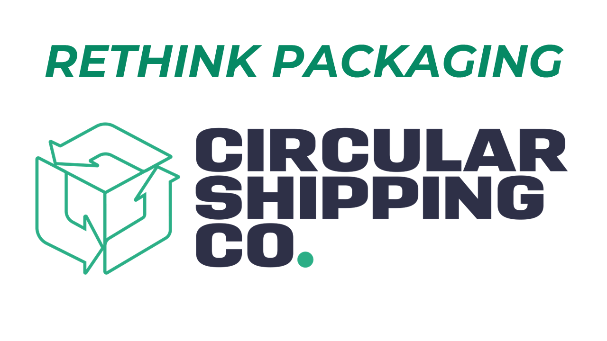

This module adds a packaging choice widget to the eCommerce payment page. Customers choose between reusable packaging (with a refundable deposit) or single-use packaging (with a small surcharge). The deposit or surcharge is automatically added as a separate order line and shown in the order totals.
After installation, go to Settings → Circular Shipping to configure:
Requires: eCommerce, Sales, Website, Delivery
Compatible with: Odoo 18